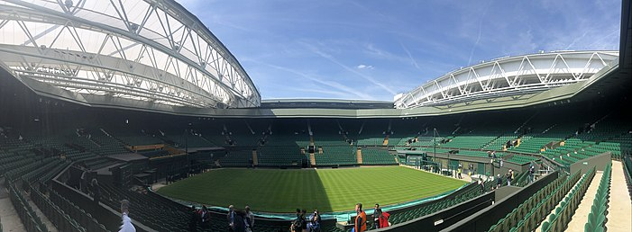

The Championships, commonly known simply as Wimbledon,[c] is the oldest tennis tournament in the world and is regarded by many as the most prestigious.[2][3][4][5][6] It has been held at the All England Club in Wimbledon, London, since 1877 and is played on outdoor grass courts, with retractable roofs over the two main courts since 2019.
Wimbledon is one of the four Grand Slam tournaments, the others being the Australian Open, the French Open, and the US Open. Wimbledon is the only major still played on grass, the traditional tennis playing surface. Also, it is the only Grand Slam that retains a night-time curfew, though matches can now continue until 11.00 pm under the lights.
The tournament traditionally takes place over two weeks in late June and early July, starting on the last Monday in June and culminating with the Ladies' and Gentlemen's Singles Finals, scheduled for the Saturday and Sunday at the end of the second week. Five major events are held each year, with additional junior and invitational competitions also taking place. In 2009, Wimbledon's Centre Court was fitted with a retractable roof to lessen the loss of playing time due to rain. A roof was operational over No. 1 Court from 2019,[7] when a number of other improvements were made, including adding cushioned seating, a table and 10 independently operable cameras per court to capture the games.
Wimbledon traditions include a strict all-white dress code for competitors, and royal patronage. Strawberries and cream are traditionally consumed at the tournament.[8] Unlike other tournaments, advertising is minimal and low key from official suppliers such as Slazenger and Rolex. The relationship with Slazenger is the world's longest-running sporting sponsorship, providing balls for the tournament since 1902.
Due to the COVID-19 pandemic, 2020 Wimbledon was cancelled, the first cancellation of the tournament since World War II.[10] The rescheduled 134th edition was staged from 28 June 2021 to 11 July 2021. The 135th edition was played between 27 June 2022 and 10 July 2022, and regularly scheduled play occurred on the middle Sunday for the first time. It marked the centenary of the inaugural championships staged at the Centre Court. The ATP, ITF, and WTA did not award ranking points for the 2022 tournament, due to controversy over the tournament excluding players representing Russia and Belarus.
The 2023 Wimbledon Championships was the 136th staging and ran from 3 July 2023 to 16 July 2023.
HISTORY
Beginning
The All England Lawn Tennis and Croquet Club is a private club founded on 23 July 1868, originally as "The All England Croquet Club". Its first ground was at Nursery Road off Worple Road, Wimbledon.[11]
21st century
Wimbledon is widely considered the world's premier tennis tournament and the priority of the club is to maintain its leadership. To that end a long-term plan was unveiled in 1993, intended to improve the quality of the event for spectators, players, officials and neighbours.[17] Stage one (1994–1997) of the plan was completed for the 1997 championships and involved building the new No. 1 Court in Aorangi Park, a broadcast centre, two extra grass courts and a tunnel under the hill linking Church Road and Somerset Road. Stage two (1997–2009) involved the removal of the old No. 1 Court complex to make way for the new Millennium Building, providing extensive facilities for players, press, officials and members, and the extension of the West Stand of the Centre Court with 728 extra seats. Stage three (2000–2011) was completed with the construction of an entrance building, club staff housing, museum, bank and ticket office.
